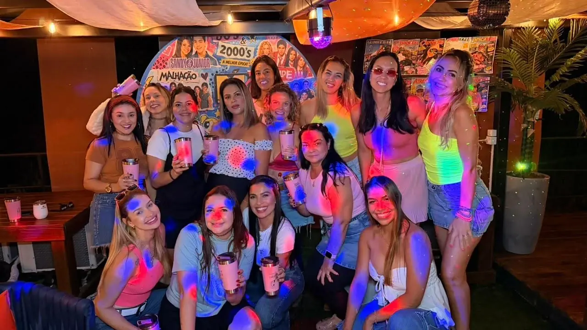
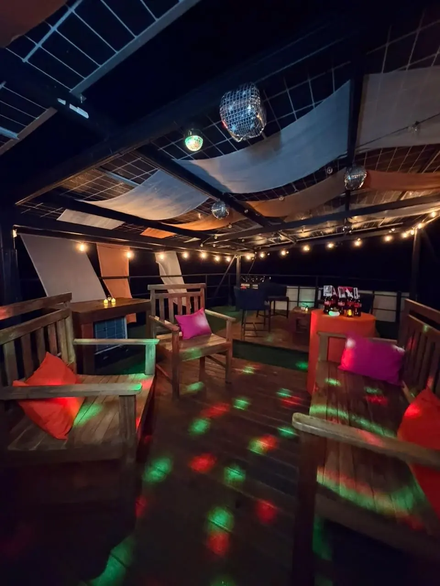
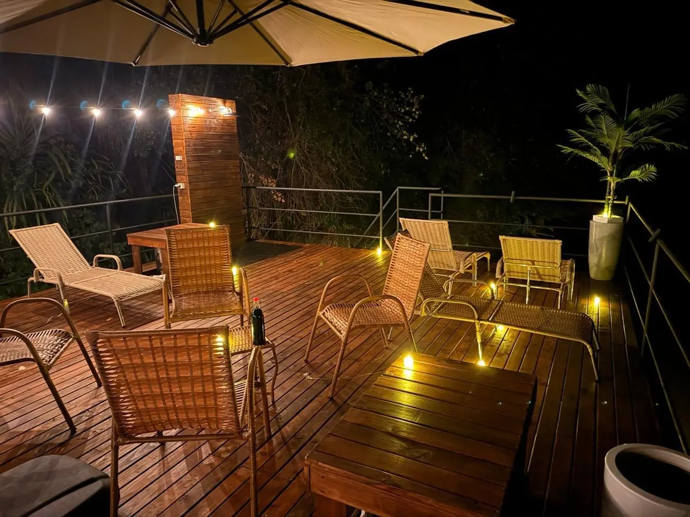
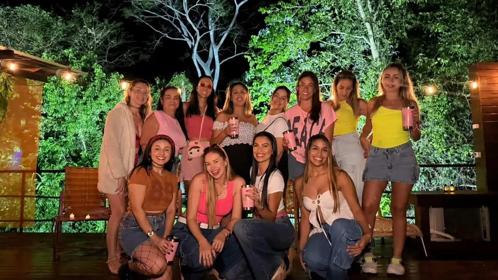

Eventos e festas no hotel flutuante, no meio do Pantanal
O Majestade também recebe festa e evento de grupo, de até 16 pessoas. O deck do último andar vira o salão, com o rio e a mata em volta, e quem quiser dorme a bordo.

Como o deck fica numa festa
As fotos desta página são de uma festa com tema dos anos 90 e 2000: globos espelhados e tecidos no teto, luzes coloridas, cordão de lâmpadas e almofadas nos bancos de madeira.


O que o flutuante tem para o seu grupo
- Deck no terceiro andar, com uma parte aberta (cadeiras, espreguiçadeiras e chuveirão) e uma parte coberta.
- Sala climatizada, com TV, mesas e sofás no primeiro andar, com cervejeira, e internet Starlink no barco.
- Cozinha a bordo: almoço e jantar a R$ 75 cada, programados com antecedência, mais as porções e bebidas do cardápio.
- 18 camas em quatro camarotes com ar-condicionado, para quem dorme a bordo.
- Chegada de barco: 23 km pelo rio desde o Pesqueiro Itaju, em Aquidauana (MS), uns 45 minutos.

Perguntas sobre eventos
- Que tipo de evento dá para fazer no Majestade?
- Para uma comemoração diferente da festa das fotos, conte a ideia pelo WhatsApp: a resposta diz o que dá para montar a bordo.
- Quantas pessoas cabem num evento?
- Até 16 pessoas por evento. Quem quiser pode dormir a bordo, nos quatro camarotes com ar-condicionado.
- Quanto custa fazer um evento no flutuante?
- O orçamento depende do número de pessoas, da data e do que entra. Dois valores do site ajudam na conta: o pernoite custa de R$ 200 a R$ 500 por pessoa, com café da manhã, e almoço e jantar custam R$ 75 cada.
- Como os convidados chegam ao flutuante?
- De barco. O embarque é no Pesqueiro Itaju, em Aquidauana (MS), a cerca de 140 km de Campo Grande. De lá são 23 km pelo rio, uns 45 minutos, em horário combinado na reserva.
Para o orçamento, mande quatro coisas: o que você quer comemorar, quantas pessoas, a data e se o grupo dorme a bordo.